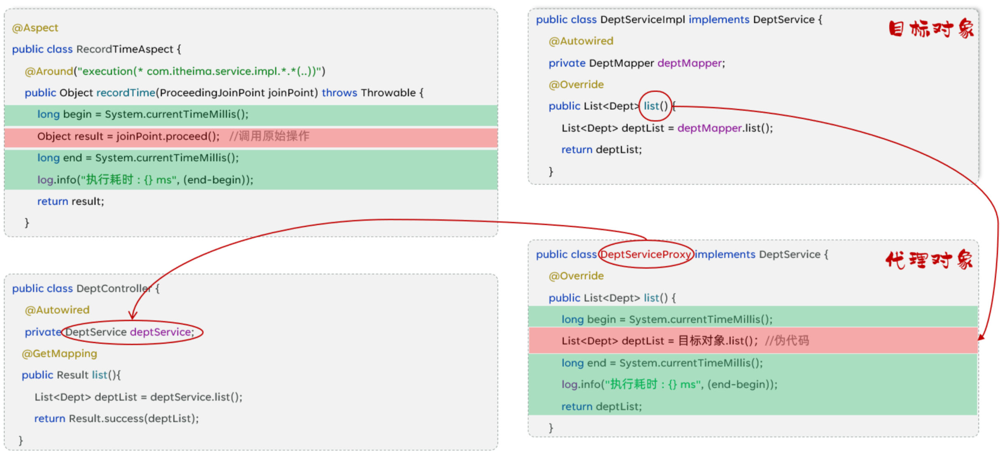
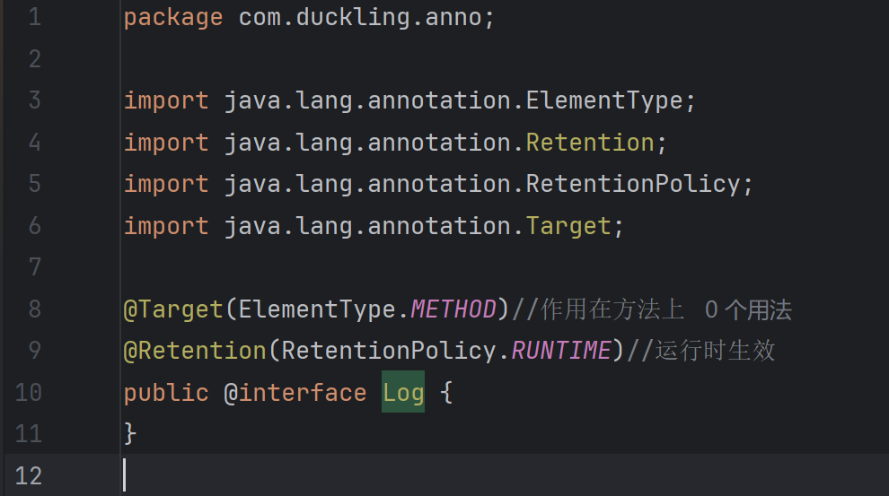
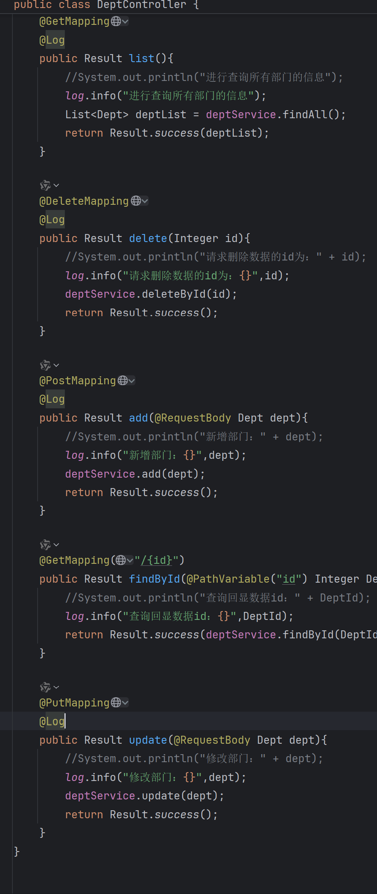
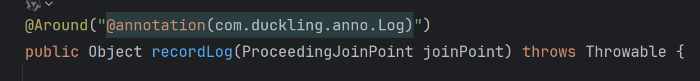

[SpringBoot]AOP
1. AOP 基础
1.1 连接点 (Join Point)
- 定义：程序执行过程中的任意位置，在 Spring AOP 中，主要指所有可以被增强的方法。
- 通俗理解：你的 Service 类里写了 10 个方法，这 10 个方法理论上都有资格被 AOP 拦截，它们都是连接点。
1.2 切入点 (Pointcut)
- 定义：对连接点进行过滤的定义（通常使用表达式
execution(...)或注解@annotation）。 - 通俗理解：虽然 Service 有 10 个方法（连接点），但我只想拦截其中的
saveUser()方法。这个“选中的规则”就是切入点。 - 关系：连接点是候选者，切入点是最终选中的集合。
1.3 通知 (Advice)
- 定义：指在切入点上要执行的具体逻辑代码。
- 类型：包括前置通知 (
@Before)、后置通知 (@After)、环绕通知 (@Around) 等。 - 通俗理解：你拦截到方法后想干什么？比如“记录日志”、“开启事务”或者“权限校验”，这些具体的业务逻辑就是通知。
1.4 切面 (Aspect)
- 定义：是切入点 (Pointcut) 和通知 (Advice) 的结合体。一个包含
@Aspect注解的类。 - 通俗理解：切面是一个“容器类”，它告诉 Spring：在哪里（切入点）做什幺（通知）。
1.5 目标对象 (Target Object)
- 定义：被一个或多个切面所通知的对象。
- 通俗理解：就是你原本写的那个 Service 类（比如
UserServiceImpl），也就是被“动了手脚”的那个原始对象。
2. AOP 底层实现原理 (Under the Hood)
这部分是你理解的核心，主要基于 动态代理 (Dynamic Proxy) 技术。
2.1 代理对象的生成
当 Spring 容器启动并初始化 Bean 时，它会检测某个 Bean（比如 UserService）是否被切面（Aspect）所覆盖（即是否匹配到了切入点）。
- 如果匹配到：Spring 不会直接把原始的
UserService对象放入容器，而是基于它生成一个 代理对象 (Proxy Object)。 - 如果没有匹配：则直接创建原始对象。
注意：Spring Boot 2.x 以后默认优先使用 CGLIB 代理（基于继承），如果类实现了接口也可能使用 JDK 动态代理（基于接口）。
2.2 依赖注入 (Dependency Injection) 的真相
在 Controller 层中，我们通常这样写：
Java
@RestController
public class UserController {
@Autowired
private UserService userService; // 这里注入的到底是谁？
public void login() {
userService.login(); // 调用方法
}
}
- 注入过程：当 Controller 向 Spring 容器索要
UserService时，因为 AOP 的存在，Spring 容器给它的不是原本定义的UserServiceImpl实例，而是生成的那个代理对象。 - 指向关系：
userService变量 -> 指向 ->代理对象 (Proxy)-> 持有 ->目标对象 (Target)。
3. 运行时的执行流程 (Execution Flow)
当你调用 userService.login() 时，实际执行的是代理对象内部的逻辑。以下是基于环绕通知 (@Around) 的典型执行顺序：
流程图解
Text Only
graph TD
A["Controller 调用 userService.login()"] --> B("进入 代理对象 Proxy")
B --> C{"是否有环绕通知?"}
C -- 是 --> D["执行 @Around 通知的前置部分"]
D --> E["遇到 pjp.proceed()"]
E --> F["执行 目标对象 Target 的原始 login() 方法"]
F --> G["目标方法返回结果"]
G --> H["执行 @Around 通知的后置部分"]
H --> I("代理对象返回最终结果")
I --> J["Controller 拿到返回值"]
代码逻辑映射
假设你在切面中写了如下代码：
Java
@Around("...") // 环绕通知
public Object recordLog(ProceedingJoinPoint pjp) throws Throwable {
// 1. 代理对象先执行这里
System.out.println(">>> 开启事务/记录日志...");
// 2. 关键点：pjp.proceed()
// 这行代码就像一个开关，它会去调用“目标对象”的原始方法
Object result = pjp.proceed();
// 3. 原始方法执行完，控制权回到代理对象
System.out.println(">>> 提交事务/结束日志...");
return result; // 4. 将结果返回给 Controller
}

4. AOP 进阶
4.1 通知类型
Spring 提供了 5 种通知类型，通过不同的注解实现：
| 注解 | 通知类型 | 执行时机 | 备注 |
|---|---|---|---|
@Around |
环绕通知 | 方法执行前后 | 功能最强。必须调用 pjp.proceed() 执行原始方法；必须返回 Object。 |
@Before |
前置通知 | 方法执行前 | 常用于参数校验。 |
@After |
后置通知 | 方法执行后 | 无论是否异常都会执行（类似 finally）。 |
@AfterReturning |
返回后通知 | 方法正常返回后 | 发生异常时不执行。 |
@AfterThrowing |
异常后通知 | 方法抛出异常后 | 仅在报错时执行。 |
4.2 通知顺序
当多个切面类（Aspect）同时切入同一个方法时，执行顺序如下：
- 默认规则：按照切面类的类名字母排序。
- 自定义控制：使用
@Order(数字)注解。 - 规则：
- 前置通知 (
Before)：数字越小，越先执行。 - 后置通知 (
After)：数字越小，越后执行。
- 前置通知 (
- 模型：类似于“洋葱圈”或“栈”结构（先进后出）。
4.3 切入点表达式
用于描述需要增强哪些方法，主要有两种写法：
4.3.1 execution (根据方法签名匹配)
- 语法：
execution(访问修饰符? 返回值 包名.类名.?方法名(方法参数) throws 异常?) - 通配符：
*：匹配单个任意符号（任意返回值、包名、类名、方法名、单个参数）。..：匹配多个连续任意符号（任意层级包、任意个数参数）。- 常用示例：
execution(* com.itheima.service.*.*(..))：匹配 service 包下所有类的所有方法。execution(* com.itheima.service.impl.DeptServiceImpl.delete(*))：匹配特定类的 delete 方法。- 建议：基于接口描述，不基于实现类描述，增强扩展性。
4.3.2 @annotation (根据注解匹配)
-
适用场景：当需要匹配的方法没有规律（例如：既包含
save又包含delete，但不包含get），使用 execution 很难描述时。 -
步骤：
自定义一个注解（如 @Log）。

在需要增强的方法上加上该注解。

表达式写法："@annotation(com.duckling.anno.Log)"。

5. AOP 案例：操作日志记录
5.1 需求
记录系统中所有“增、删、改”功能接口的操作日志。
- 记录字段：操作人 ID、操作时间、全类名、方法名、方法参数、返回值、执行耗时。
5.2 分析
- 技术选型：使用 AOP 的
@Around环绕通知（因为需要同时获取开始时间、结束时间和返回值）。 - 切入点：由于增删改方法名可能不规则，采用
@annotation方式。
5.3 步骤
- 引入 AOP 依赖。
- 准备数据库表
operate_log和实体类。 - 自定义注解
@LogOperation。 - 编写切面类
OperationLogAspect，实现日志记录逻辑。
5.4 代码实现 (核心逻辑)
Java
@Aspect
@Component
public class OperationLogAspect {
@Autowired
private OperateLogMapper operateLogMapper;
@Around("@annotation(com.itheima.anno.LogOperation)")
public Object recordLog(ProceedingJoinPoint joinPoint) throws Throwable {
// 1. 记录开始时间
long begin = System.currentTimeMillis();
// 2. 执行原始方法
Object result = joinPoint.proceed();
// 3. 计算耗时
long end = System.currentTimeMillis();
// 4. 获取日志信息并保存 (异步或同步)
OperateLog log = new OperateLog();
log.setClassName(joinPoint.getTarget().getClass().getName()); // 类名
log.setMethodName(joinPoint.getSignature().getName()); // 方法名
log.setMethodParams(Arrays.toString(joinPoint.getArgs())); // 参数
log.setReturnValue(result.toString()); // 返回值
// ... 设置其他属性 ...
operateLogMapper.insert(log);
return result;
}
}
5.5 连接点 (JoinPoint)
在通知方法中，通过参数获取目标方法的信息：
ProceedingJoinPoint：仅用于@Around。特有方法proceed()用于执行目标方法。JoinPoint：用于其他四种通知。- 常用 API：
getArgs(): 获取方法参数。getTarget(): 获取目标对象。getSignature(): 获取方法签名（方法名等）。
5.6 获取当前登录员工
AOP 切面本身无法直接从 Request 中解析 Token（虽然可以注入 Request，但解析逻辑重复）。最佳实践是结合 Filter/Interceptor 和 ThreadLocal。
5.6.1 ThreadLocal
- 定义：线程局部变量。
- 作用：为每个线程提供独立的变量副本，实现线程间的数据隔离。Tomcat 中每个请求由一个独立线程处理，ThreadLocal 非常适合在同一个请求的调用链（Filter -> Controller -> Service -> AOP -> Mapper）中共享数据。
- 核心方法：
set(T value): 存入数据。get(): 取出数据。remove(): 清理数据（至关重要，防止内存泄漏）。
5.6.2 记录当前登录员工 (完整流程)
- 准备工具类：创建一个
BaseContext工具类，封装 ThreadLocal 的 set/get/remove 方法。 - Filter/Interceptor 层：
- 解析请求头中的 JWT 令牌。
- 获取用户 ID。
- 调用
BaseContext.setCurrentId(id)存入 ThreadLocal。 - 关键点：在
finally块或afterCompletion中调用BaseContext.remove()清理数据。 - AOP 层：
- 直接调用
BaseContext.getCurrentId()获取当前操作人的 ID，填入日志对象。